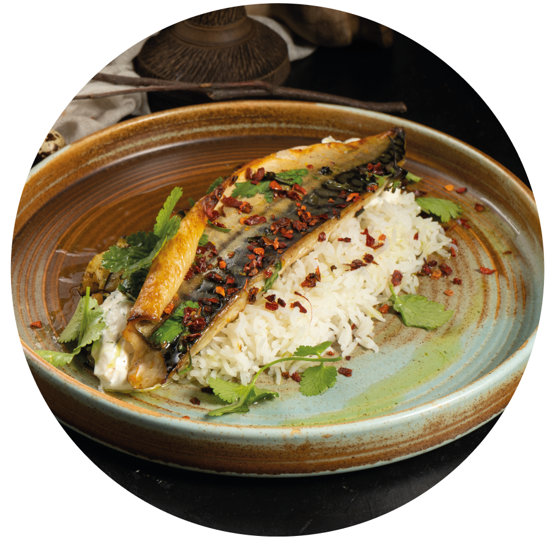
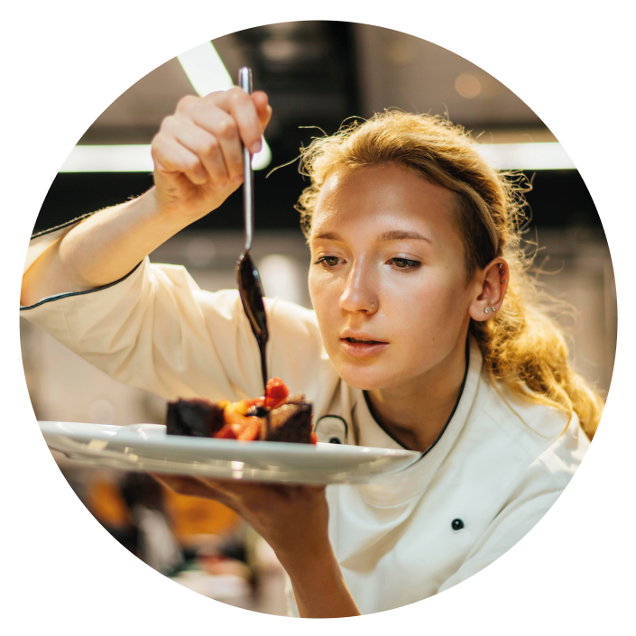
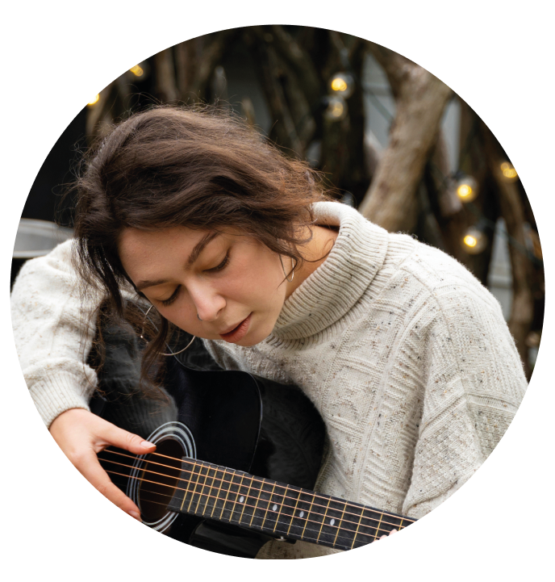
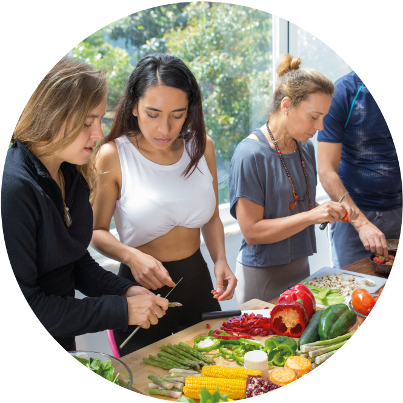
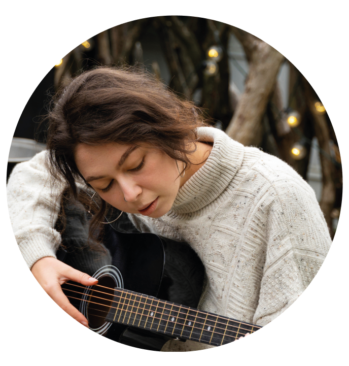
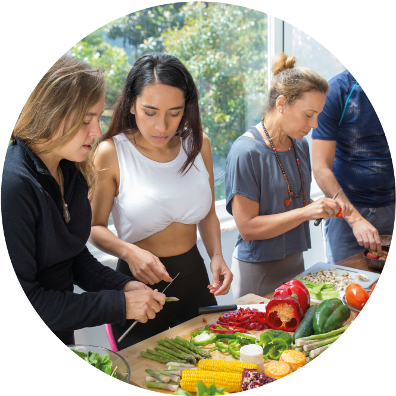

O Festival
Com o intuito de enaltecer a gastronomia comtemporânea do Brasil, surgiu o festival Temperos & Sabores.
Serão 3 dias com muita comida, música e aprendizado.
Data: 04 a 06 de maio
Local: Centreventos Oliveira - Av. Maria José, n°123
Horário: 10h às 23h
ENTRADA GRATUITA
VENHA CURTIR ESSA EXPERIÊNCIA DE MUITOS SENTIDOS COM A GENTE!



Menus desenvolvidos por chefes renomados.

Apresentações com o melhor da música brasileira.

Workshops sobre gastronomia e técnicas da cozinha contemporânea